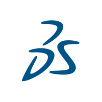
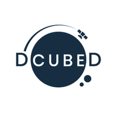
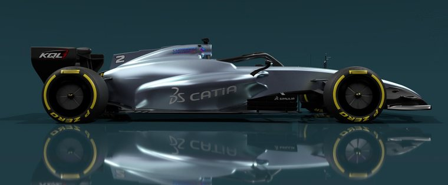

Profile
CATIA Expert and mechanical engineer shaped by high-tech industries, from CAD software R&D to aerospace and space. I manage the portfolio of CATIA core design roles (Part, Surface and Sketcher), turning industrial needs into R&D roadmaps on themes such as Body-in-White, and I keep my hands on the product: high-quality surfacing, robust parametric and modular design, and simulation-driven engineering.
Experience

CATIA R&D Core Engineering Roles Portfolio Manager
Apr 2024 – presentDassault Systèmes · Vélizy-Villacoublay, France
- Own the portfolio and roadmap of the CATIA core design roles (Part, Surface and Sketcher) on 3DEXPERIENCE, from customer needs to prioritized R&D requirements.
- Define LEO, the LLM-powered AI assistant of 3DEXPERIENCE.
- Work with many customers across industries such as automotive, aerospace, transportation & defense, from their engineering processes to CATIA requirements.
- Build industrial demonstrators on real products: F1 virtual twin (front wings 2019 & 2025, brake air duct entry), aircraft wing, car Body-in-White (generative door and hood) and CubeSat.
- CATIA Talk speaker and demonstration videos for the official CATIA page.

Mechanical System Engineer (VIE via Alten)
Jul 2023 – Jan 2024DCUBED · Munich, Germany
- Owned the deployment mechanisms of a multi flat-panel reflectarray antenna for small satellites (ESA ARTES – MARAS project).
- Covered every step: R&D, simulation & validation, manufacturing and test campaign; co-author of the related IAC 2024 paper.
Mechanical Engineer & CAD Process Engineer (VIE via Alten)
2022 – 2023Airbus · Hamburg & Munich, Germany
- A350 cabin: modeling of galley sets in CATIA V5 (4 months).
- MDO CAD process: topology optimization support on 3DEXPERIENCE and export control compliance (6 months).
CATIA R&D Engineer (Apprenticeship)
Sep 2020 – Sep 2022Dassault Systèmes · Vélizy-Villacoublay, France
- Generative design: demonstrators coupling structural and fluid topology optimization, subdivision modeling, city- and bridge-scale models by reverse engineering (Bir-Hakeim bridge: from generative design to steel structure).
- Sustainable campus: energy-harvesting mechanisms (speed bump, turnstile, piezo floor), simulated in SIMULIA and Dymola, with a 1:20 working 3D-printed model.
Production Quality Assurance (Apprenticeship)
2019 – 2020Safran Aircraft Engines · France
- Quality control on turbine-blade lines (M88 Rafale, LEAP, CFM56), reducing costs and lead times.
Personal project

Formula 1 2026 · full car at scale 1:1
Oct 2025 – presentDesigned from scratch in CATIA and compliant with the 2026 FIA technical regulations: modular architecture, precise GSD+ surfaces only, circuit aero packages validated with SIMULIA CFD.
300+ hours60k+ features0 B-Rep
Discover the car →